AnyPortrait > マニュアル > ボーンと物理コンポーネントの連携
「Unity」の「2D物理システム」をキャラクターに適用すると、ゲームははるかに動的に見えます。
特に、キャラクターのボーンに「Rigidbody」コンポーネントなどを追加すれば、物理衝突による動きを持つこともできるはずです。
しかし残念ながら、「AnyPortrait」のシステムと「Unity」の物理コンポーネント間の互換性は良くない方です。
したがって、物理コンポーネントの動きを「AnyPortrait」の骨格構造に適用するには、特別な方法を使用する必要があります。
このページでは、この特別なテクニックのアイデアを最初に紹介し、それを活用して「ロボットキャラクターの腕を分離するスクリプト」を作成します。
また、このページで紹介した内容を応用して「ラグドール」を作成することもできます。
このページの説明をご覧の上、次ページでラグドル実装方法も確認してみてください！
メモ
このページの内容は「Unity 6.2」に基づいて作成されました。
バージョンによっては、スクリプトやコンポーネントの実装方法が異なる場合があります。
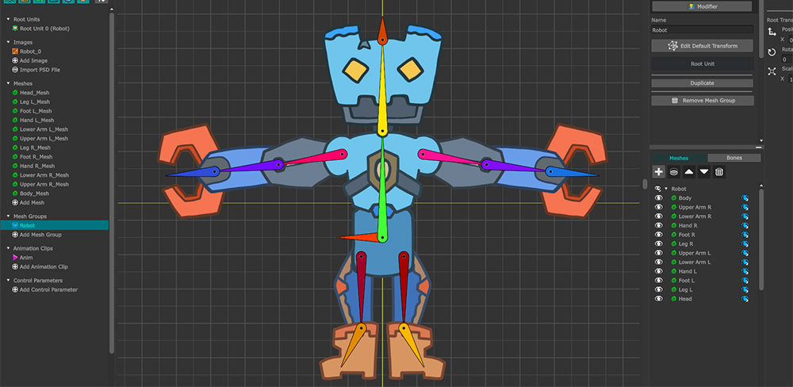
このページで使用するロボットキャラクターを作成しました。
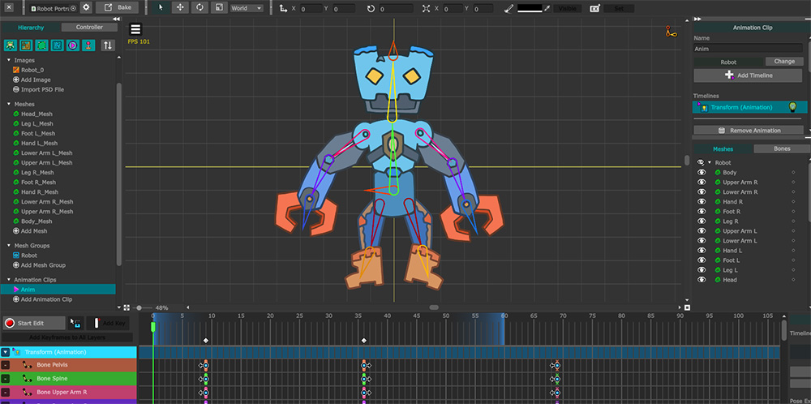
「Transformモディファイア」を利用して、「Anim」という名前のシンプルなループアニメーションを制作しました。
「ルートユニット」画面で、このアニメーションがゲーム開始時に自動的に再生されるように設定しました。
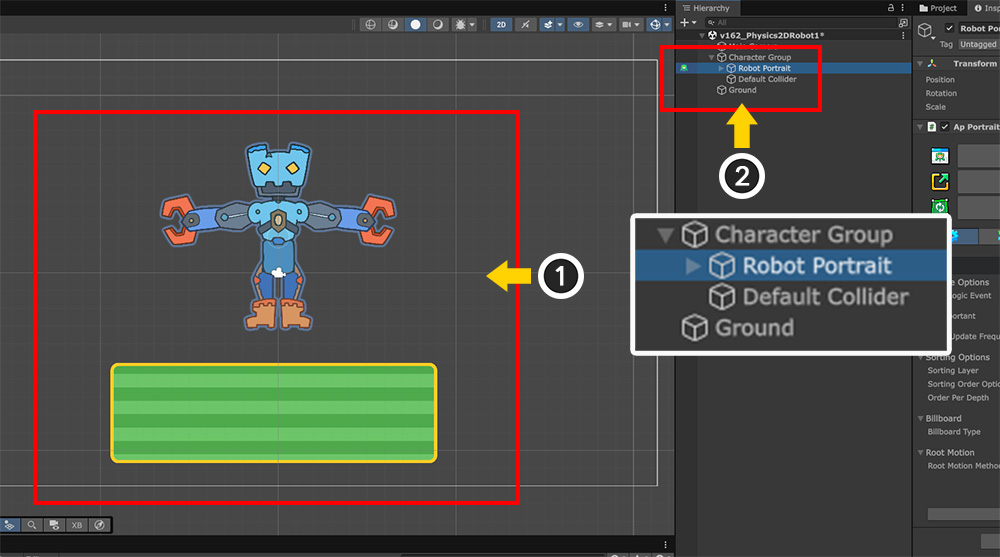
(1) 「Bake」を実行してキャラクターをシーンに配置し、物理衝突テスト用の四角スプライトを追加した状態です。
(2) キャラクターに基本的な物理効果を実装するために、上記のように「GameObject」を追加して「親子関係」を構成しました。
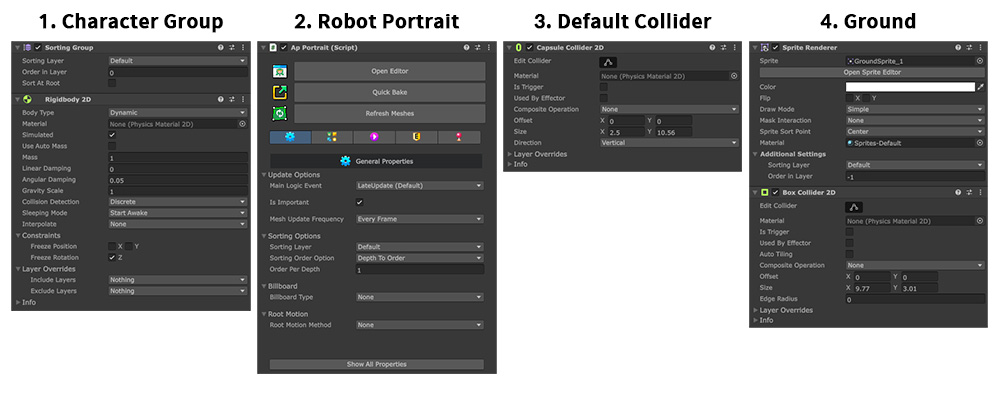
シーンに配置されたオブジェクトの役割に合わせてコンポーネントを追加しました。
1. Character Group
ロボットキャラクタのルートオブジェクトです。
キャラクターの場合、「AnyPortrait」で制作したキャラクターとは別に、役割に合わせてオブジェクトを分離することが効果的です。
そのため、「AnyPortrait」キャラクタの親として新しい「GameObject」を作成して制御するのが便利です。
「Sorting Group」と「Rigidbody 2D」コンポーネントを追加して、子オブジェクトを物理的に移動させます。
2. Robot Portrait
「AnyPortrait」で製作したロボットキャラクターです。
3. Default Collider
キャラクター全体の衝突領域に対応する「Collider」コンポーネントを持つオブジェクトです。
「Collider」コンポーネントの種類はキャラクター形態に合わせて決めればいいです。
ここでは「Capsule Collider 2D」を利用しました。
「Collider」コンポーネントを「Character Group」に追加する場合、このオブジェクトは必要ありません。
4. Ground
キャラクターの下に位置する長方形のスプライトです。
「Box Collider 2D」が追加されており、落ちるキャラクターがここに着地できます。
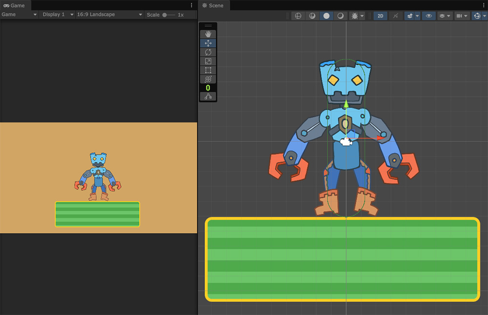
ゲームを実行すると、上のようにキャラクターが下に落ちた後に着地するのがわかります。
上記のように「Rigidbody」と「Collider」を利用して、キャラクターの全体的なサイズに合わせて物理的な動きを実現することができます。
これで、キャラクターの個々のボーンに物理的な動きを実装する準備が整いました。
スクリプトを作成する前に、どのように実装するかをしばらく考えてみましょう。
「Unity」の「スケルタルアニメーションシステム」に物理効果を与えたい場合は、ボーンに対応する「GameObject」にコンポーネントを追加するだけです。
しかし、「AnyPortrait」で制作されたキャラクターにはこのように物理的な効果を与えることはできません。
したがって、物理コンポーネントと連携するためにはスクリプトを書く必要があります。
「AnyPortrait」のボーンを任意の場所に移動するスクリプトを書くことは難しくありません。 （関連ページ）
物理コンポーネントを活用した動きを計算した結果値をキャラクターに渡すスクリプトを作成する必要がありますが、そのためには次の問題を解決する必要があります。
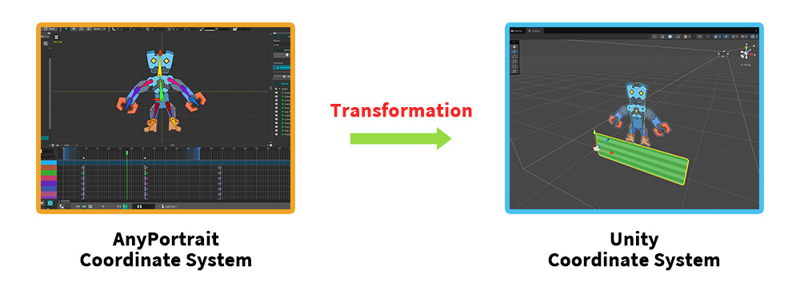
最大の難関は、「AnyPortrait」と「Unity」の座標系が異なることです。
「AnyPortrait」には独自の座標系があり、「Unity」でレンダリングされるには変換操作が必要です。
この違いは、単に位置値が異なるだけでなく、「AnyPortrait」のスケルタルアニメーションでは「GameObject」を活用しないことを意味することもあります。
つまり、システム特性と座標系の問題で物理コンポーネントを「AnyPortraitキャラクタ内部のボーンに該当するGameObject」に付けても全く動作しなくなります。
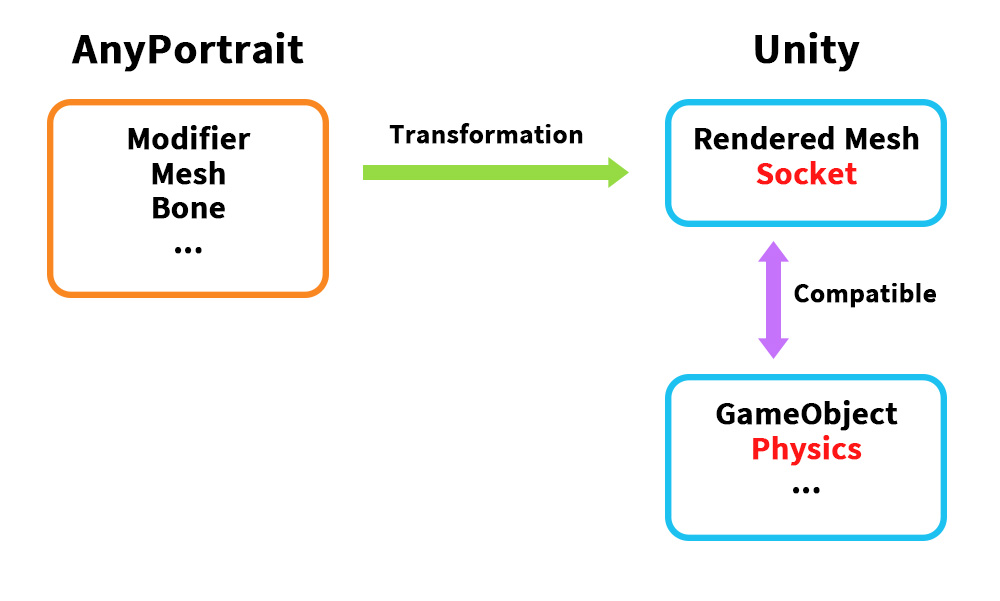
しかし、座標系の変換プロセスを詳しく見ると、連動が完全に不可能なわけではありません。
特に、「ソケット（Socket）」（関連ページ）を利用すれば実装が可能です。
「ソケット」は、もともとボーンやメッシュに「Unity」のオブジェクトを取り付けるための機能です。
そのため、「ソケット」は「Transform」の形で提供されますが、これらの特性のおかげで他のコンポーネントと連動するのにも最適です。
しかし、「ソケット」に物理コンポーネントを取り付けるだけでは、物理的な動きを実現することはできません。
「ソケット」は単に「AnyPortrait」アニメーションの結果だけを反映するだけで、その逆で動作するわけではありません。
だから、「Rigidbody」によって「ソケット」が動いても、その結果がキャラクターのアニメーションに反映されません。
スクリプトで「ソケット」の位置変換をキャラクターに反映したいとしても、スクリプトの実行順序の問題により安定した物理的な動きを実現することは難しい。
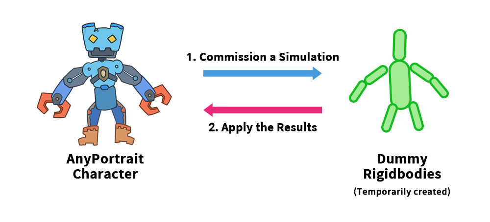
そこで考案された方法は、物理的な動きを代わりに行う「ダミーオブジェクト」を一時的に生成することです。
「ダミーオブジェクト」に物理コンポーネントを取り付けた後、物理的な動きをキャラクターの代わりに行うように委託します。
そしてスクリプトを作成し、フレームごとにダミーオブジェクトの位置や回転値などをキャラクターのボーンに反映します。
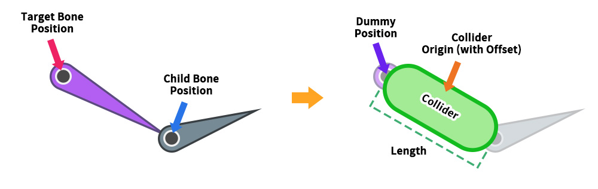
この実装方法の最初のステップは、キャラクターのボーンの形に合わせて物理コンポーネントを持つ「ダミーオブジェクト」を作成することです。
まず、「対象となるボーン」とその「子ボーン」の位置をそれぞれ求めます。
このとき、「ソケット」を使ってボーンの位置を知ることができます。
そして、2つの位置を結ぶ「Collider」と「Rigidbody」を持つ「GameObject」を作成します。
「GameObject」の中心はターゲットボーンの位置と同じでなければならず、次に「Collider」の「Offset」と「Length」を適切に設定します。
このオブジェクトがターゲットボーンの物理的な動きをシミュレートするダミーオブジェクトになります。
「ダミーオブジェクト」が作成された場合、「ダミーオブジェクト」の物理的な動きは物理コンポーネントによって自動的に実行されます。
次のステップで実装する必要があるのは、「ダミーオブジェクトの位置または回転値」を「AnyPortraitのボーン」に適用することです。
「apPortrait」の「SetBonePosition」や「SetBoneRotation」関数などを「Update」関数から呼び出すだけです。
ダミーを活用した物理コンポーネント連動のアイデアは上記のとおりです。
このアイデアに基づいて実際に実装してみましょう。
このページでは、「ロボットの腕が離れて物理的な動きを持つ例」を作成します。
アニメーション中にロボットの腕が分離され、落ちた腕があちこち衝突しながら物理的に動くようにしましょう。
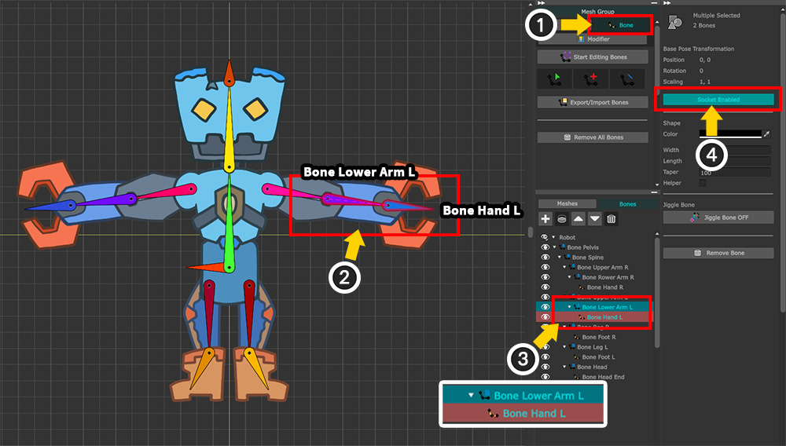
スクリプトを作成する前に、文字を最初に変更する必要があります。
(1) 「Bone」タブを選択します。
(2) 分離する腕に対応するボーンの名前は「Bone Lower Arm L」です。 「Collider」の長さなどを計算するには、ターゲットの子である「Bone Hand L」も参照できる必要があります。
(3) 右側の「Hierarchy UI」で Ctrl キーを押して、対象となるボーンとその子ボーンの両方を選択します。
(4) 「Socket」オプションを有効にします。
「AnyPortraitエディタ」では、ボーンは「長い針の形」で表示されます。
しかし、これは作業の利便性のためであり、実際にはボーンのエンドポイントは有効なデータとして扱われません。
だから、ボンのエンドポイントをシーンで参照するには、「子ボーン」を使用する必要があります。
もし対象ボーンに子が2つ以上存在する場合、ボーンの終点に該当するボーンを選択してください。
逆に、子ボーンがない場合は、1つの子ボーンを必ず追加してください。
上記の作業が完了したら、「Bake」を実行します。
そして、次のようにスクリプトを作成します。
using UnityEngine;
using AnyPortrait;
public class v162_DetachBoneScript : MonoBehaviour
{
// ターゲットPortrait
public apPortrait portrait;
// 生成された物理シミュレーション用ダミーオブジェクト
private Transform _detachedDummy = null;
void Start() { }
void Update()
{
// Aキーを押すとボーンが切り離され、物理シミュレーションが適用されます。
if (Input.GetKeyDown(KeyCode.A))
{
MakeDetachedBone();
}
// Sキーを押すと元に戻ります。
if (Input.GetKeyDown(KeyCode.S))
{
// ダミーオブジェクトを削除した後、アニメーションを再び再生します。
if (_detachedDummy != null)
{
Destroy(_detachedDummy.gameObject);
_detachedDummy = null;
}
portrait.Play("Anim");
}
// ダミーオブジェクトが存在する場合は、物理シミュレーションとなったダミーオブジェクトの位置と回転をボーンに適用します。
if (_detachedDummy != null)
{
Vector3 upVectorW = _detachedDummy.TransformDirection(Vector3.up);
float angleZ_W = Vector3.SignedAngle(Vector3.up, upVectorW, Vector3.forward);
angleZ_W += 90.0f;
portrait.SetBonePosition("Bone Lower Arm L", _detachedDummy.position, Space.World);
portrait.SetBoneRotation("Bone Lower Arm L", angleZ_W, Space.World);
}
}
// 「Rigidbody2D」と「Collider2D」が追加されたダミーオブジェクトを作成し、ボーンが分離されているように見えます。
private void MakeDetachedBone()
{
// すでにダミーオブジェクトが存在する場合、重複生成を防止します。
if (_detachedDummy != null)
{
return;
}
// 「Bone Lower Arm L」と「Bone Hand L」の位置を利用してダミーオブジェクトを作成します。
Transform boneSocket = portrait.GetBoneSocket("Bone Lower Arm L");
Transform childBoneSocket = portrait.GetBoneSocket("Bone Hand L");
Vector3 worldPos = boneSocket.position;
float angleZ = Vector3.SignedAngle(Vector3.up, childBoneSocket.position - boneSocket.position, Vector3.forward);
// ダミーオブジェクトを作成し、初期位置と回転を設定します。
GameObject dummyGameObject = new GameObject("Detached Dummy");
_detachedDummy = dummyGameObject.transform;
_detachedDummy.parent = null;
_detachedDummy.position = worldPos;
_detachedDummy.localRotation = Quaternion.Euler(0.0f, 0.0f, angleZ);
_detachedDummy.localScale = Vector3.one;
Rigidbody2D detachedRigidbody = dummyGameObject.AddComponent<Rigidbody2D>();
detachedRigidbody.mass = 1.0f;
// 2本のボーンの距離を利用して「Capsule Collider 2D」のサイズを設定します。
float hingeHeight = Vector3.Distance(boneSocket.position, childBoneSocket.position);
float hingeWidth = hingeHeight * 0.5f;
CapsuleCollider2D capsuleCollider = dummyGameObject.AddComponent<CapsuleCollider2D>();
capsuleCollider.direction = CapsuleDirection2D.Vertical;
capsuleCollider.size = new Vector2(hingeWidth, hingeHeight);
capsuleCollider.offset = new Vector2(0.0f, hingeHeight * 0.5f);
// ダミーオブジェクトに初期力を加え、物理シミュレーションが適用されたように見えます。
detachedRigidbody.AddForce(new Vector2(3.0f, 2.0f), ForceMode2D.Impulse);
}
}
上記のスクリプトの主要なコードを見てみましょう。
...
// ダミーオブジェクトが存在する場合は、物理シミュレーションとなったダミーオブジェクトの位置と回転をボーンに適用します。
if (_detachedDummy != null)
{
Vector3 upVectorW = _detachedDummy.TransformDirection(Vector3.up);
float angleZ_W = Vector3.SignedAngle(Vector3.up, upVectorW, Vector3.forward);
angleZ_W += 90.0f;
portrait.SetBonePosition("Bone Lower Arm L", _detachedDummy.position, Space.World);
portrait.SetBoneRotation("Bone Lower Arm L", angleZ_W, Space.World);
}
...
これは、「ダミーオブジェクト」が存在する場合に「Update」関数でフレームごとに実行されるコードです。
「ダービーオブジェクト」が物理コンポーネントによって移動しながら「分離された腕」の物理シミュレーションを行った結果を「AnyPortrait」キャラクターの「ターゲットボーン（Bone Lower Arm L）」に渡します。
「_detachedDummy.position」を「SetBonePosition」関数を通してボーンに渡してボーンの位置を更新します。
ボーンの回転角度の場合、座標系が異なるため、そのまま入力することはできません。
したがって、上記のコードのように角度を計算した後、その結果を「SetBoneRotation」関数を通して適用する必要があります。
「apPortrait」の「SetBonePosition」または「SetBoneRotation」関数は、「LateUpdate」ではなく「Update」関数から呼び出す必要があります。
これは、その関数が実行された時点でボーンが直接移動するのではなく、そのフレームの「AnyPortraitアニメーション演算」で要求された値が適用される方法だからです。
だから「AnyPortraitキャラクターのアップデート」より先に呼び出さなければなりません。
...
// 「Bone Lower Arm L」と「Bone Hand L」の位置を利用してダミーオブジェクトを作成します。
Transform boneSocket = portrait.GetBoneSocket("Bone Lower Arm L");
Transform childBoneSocket = portrait.GetBoneSocket("Bone Hand L");
Vector3 worldPos = boneSocket.position;
float angleZ = Vector3.SignedAngle(Vector3.up, childBoneSocket.position - boneSocket.position, Vector3.forward);
...
「ダミーオブジェクト」を作成するとき、「ターゲットボーン（Bone Lower Arm L）」の位置と回転角度を求めるコードです。
まず、「ソケット」を使用して各ボーンに対応する「Transform」を取得します。
位置の場合、ボーンの「Transform」の位置をそのまま参照すれば良いのですが、回転角度は上記のように変換して使用する必要があります。
続く「GameObject生成コード」で計算した位置と回転角度を適用してください。
...
// 2本のボーンの距離を利用して「Capsule Collider 2D」のサイズを設定します。
float hingeHeight = Vector3.Distance(boneSocket.position, childBoneSocket.position);
float hingeWidth = hingeHeight * 0.5f;
CapsuleCollider2D capsuleCollider = dummyGameObject.AddComponent<CapsuleCollider2D>();
capsuleCollider.direction = CapsuleDirection2D.Vertical;
capsuleCollider.size = new Vector2(hingeWidth, hingeHeight);
capsuleCollider.offset = new Vector2(0.0f, hingeHeight * 0.5f);
...
「ダミーオブジェクト」に「Rigidbody2D」を追加した後、「CapsuleCollider2D」を追加するコードです。
「コライダー」の大きさを求めるために、先に求めた2つの「ソケット」の位置を利用します。
ただし、「コライダーの幅」を正確に求める方法はないので、高さを基準に任意に計算されるように作成しました。
「コライダー」の「Offset」の「Y」の値が高さの半分であることも確認してください。
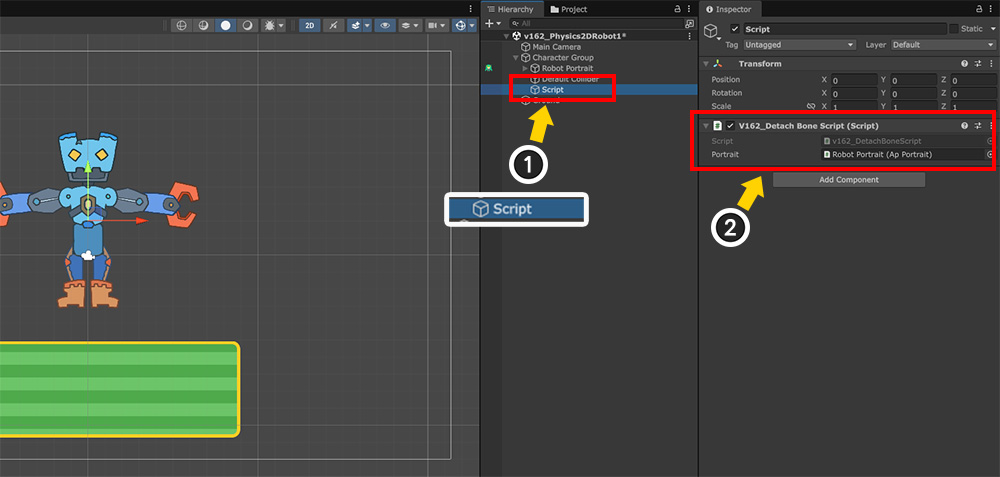
スクリプトをすべて書いたら、シーンに戻ります。
(1) スクリプトを適用するための「GameObject」を生成します。
(2) スクリプトを「GameObject」に追加した後、メンバー変数にロボットキャラクタを割り当てます。
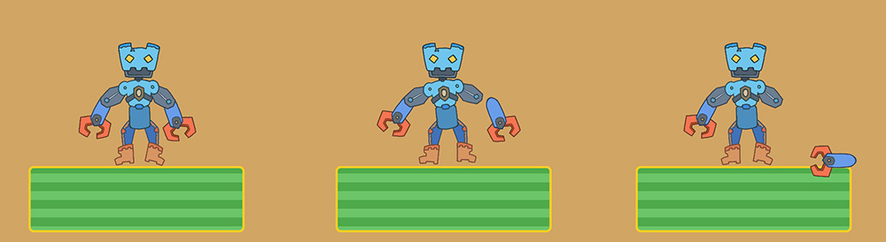
ゲームを実行してスクリプトに合わせて A キーを押すと、上記のように腕が外れて落ちるのがわかります。
また、別々の腕が床に衝突することもあります。
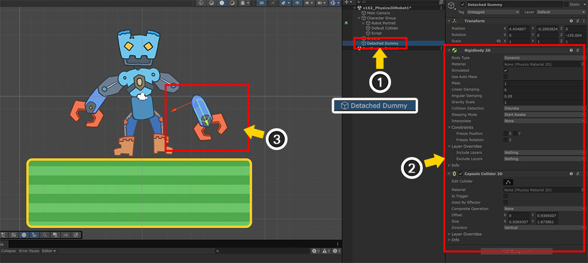
この状態でシーンにどんな変化があったかを確認しましょう。
(1) 腕が分離されると、スクリプトによって「ダミーオブジェクト」が生成されます。
(2) 「ダミーオブジェクト」に「Rigidbody 2D」、「Capsule Collider 2D」コンポーネントが追加されています。
(3) シーンビューでは、「ダミーオブジェクト」と「ロボットの腕」が同期して動いていることがわかります。
このページで紹介した方法を活用してキャラクターの個々のボーンに物理的な動きを与えることが可能です。
ダミーオブジェクトをどのように作成して設定するかに応じて、さまざまな効果を与えることができます。
さまざまなアイデアを想像してみてください！